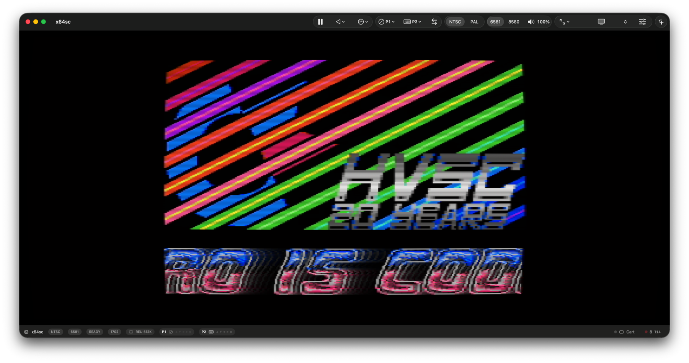
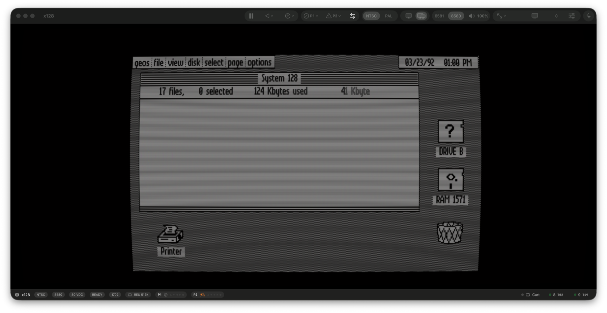
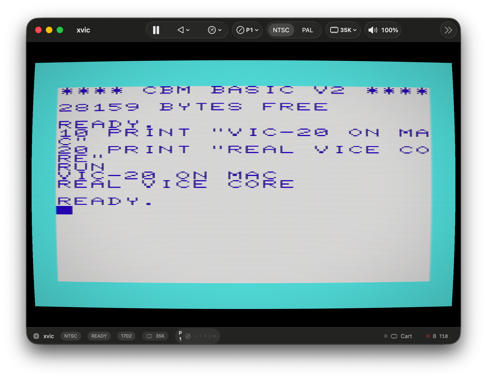
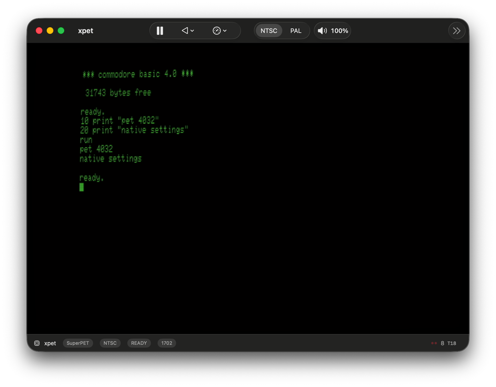
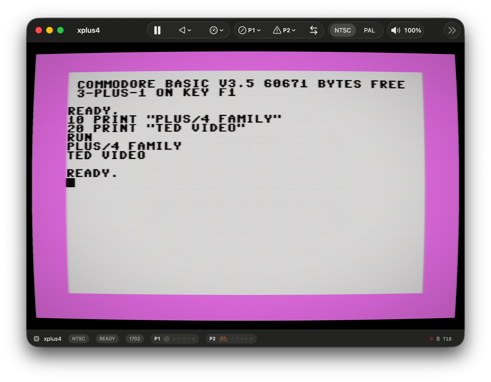
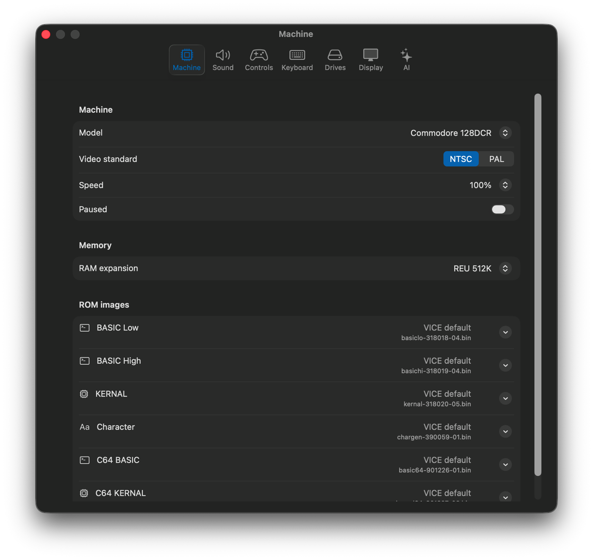
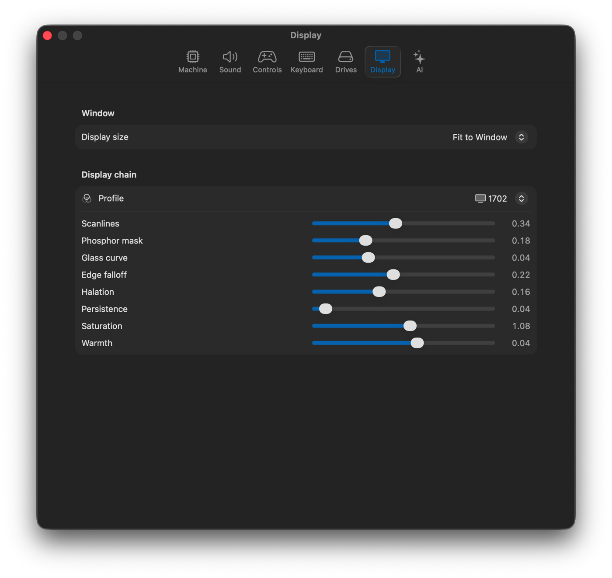
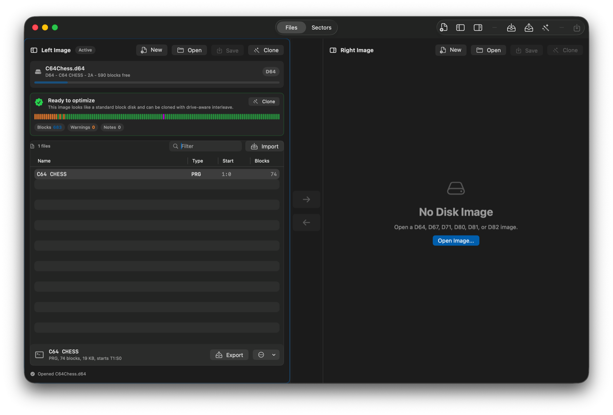
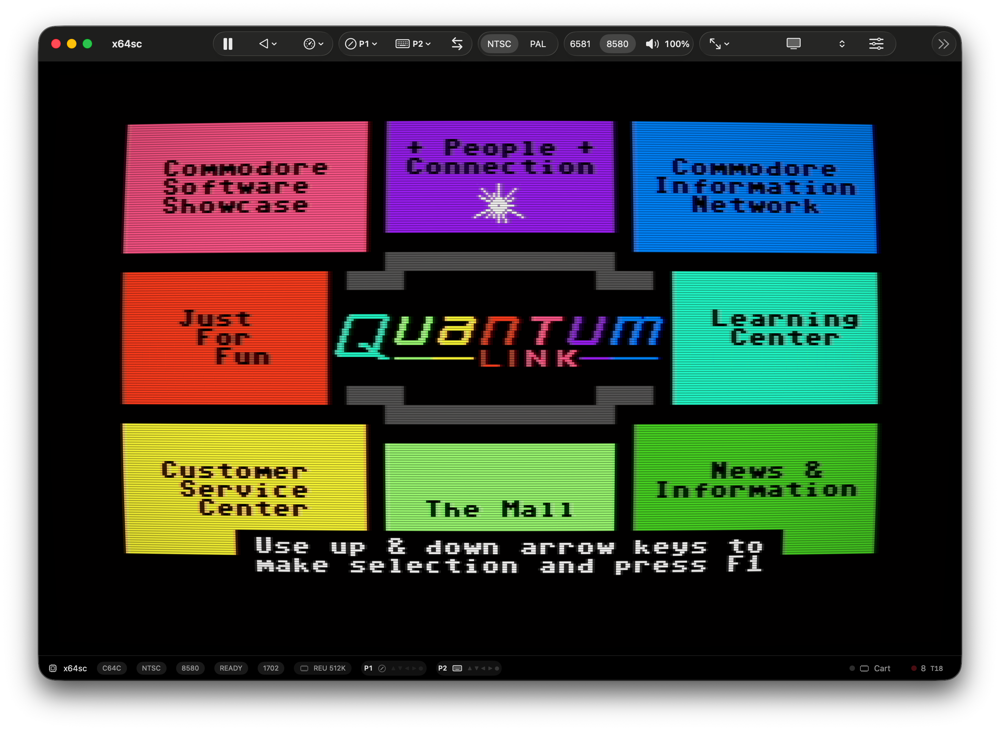

Metal display output
Low-latency rendering with CRT, LCD, PVM, RF, phosphor, scanline, mask, curvature, and color controls.
VICE, packaged for macOS
Current VICE, packaged for Apple Silicon Macs with Metal display output, Mac settings, media tools, controller setup, Q-Link Reloaded help, optional AI, and signed DMG releases.
Latest signed release is published on GitHub.

Native Mac workflow
Low-latency rendering with CRT, LCD, PVM, RF, phosphor, scanline, mask, curvature, and color controls.
Copy disks, programs, tapes, cartridges, and snapshots into app-managed storage, then search, favorite, inspect, and launch.
Identify connected USB controllers by input, name devices, bind ports, and keep per-device mappings.
Models, ROMs, RAM, SID, storage, printing, tape, modem, snapshots, and video settings stay scoped to the current machine.
User Port, SwiftLink, and Turbo232 support with Raw TCP, Telnet, outbound dialing, and incoming calls.
Native debugger views for CPU state, memory, registers, breakpoints, watchpoints, and Mac printer output.
Embeddable engine
MacVICEKit packages the native VICE bridge, Metal display view, input routing, media helpers, callbacks, and debugger APIs as a Swift package for other macOS apps.
Machine gallery
x64sc
HVSC intro disk, SID music, demos, GEOS, and the software people remember.

x128
GEOS 128 in 80-column VDC mode, CP/M disks, and native C128 workflows.

xvic
Gridrunner, Omega Race, cartridge classics, and very small BASIC programs.

xpet
Monochrome BASIC, early business software, and classic PET displays.

xplus4
TED color, Plus/4 software, C16, C232, and V364 machines.
Setup without archaeology

Use normal Mac controls for models, video standards, ROMs, RAM, and runtime behavior.

Dial in clean LCD output or period-correct CRT character from the same settings UI.
Disk image manager

Disk Manager
Open D64-family images, move files, inspect sectors, and keep disks in Mac windows.
Optional AI tools
The assistant is off until configured. When enabled, it uses an OpenAI-compatible provider, including local servers, and exposes focused emulator tools for machine context, debugger snapshots, memory reads and writes, display color changes, VICE resources, typing, and BASIC line submission.
Searchable PDFs can be added per current machine. Text-only PDFs are chunked into SQLite FTS5 so the assistant can search uploaded manuals and then read nearby context without loading entire books.
Q-Link Reloaded

Online
Known disk versions get copied, patched, checked, and started from one native command.
Choose a Quantum Link D64 you already own and mac VICE copies it into the media library, fingerprints the known disk version, and patches only that managed copy for Q-Link Reloaded.
Visit Q-Link ReloadedLatest release
The DMG contains the machine apps. Drag the ones you use into Applications.
Credits and notices
Original mac VICE website, macOS integration, packaging, and native UI work © 2026 Barry Walker.
VICE, the Versatile Commodore Emulator, is the work of the VICE Team and contributors and is distributed under the GNU General Public License. mac VICE exists because of that project.
Commodore, Quantum Link, Q-Link, and other product or service names are historical names or marks of their respective owners. mac VICE is not affiliated with those owners.